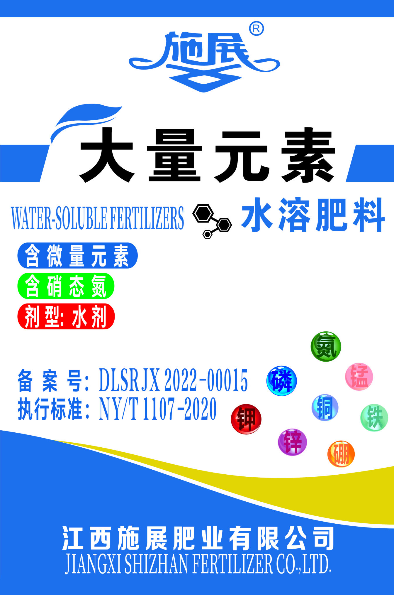

江 西 施 展 肥 业 有 限 公 司

产品名称：大量元素水溶肥料
备案号：DLSRJX2022-00015
执行标准：NY/T1107-2020
技术指标：N+P2O5+K2O≥400g/L
N≥100g/L+P2O5≥200g/L+K2O≥100g/L
Fe+Zn+Mn+B≥3g/L
剂型：水剂 保质期：5年
规格：450mL*20 9L 13.5L 18L
生产日期及批号：见实物喷码
生产企业：江西施展肥业有限公司
电话/传真：0794-8447283
地址：江西省抚州市临川区抚北工业园区
产品特点：
•适宜作物开花前，谢花坐果后施用。促进作物花芽分化，防止生理性落花落果，提高坐果率。
•所含微量元素均为EDTA螯合态，作物吸收利用率高，可预防作物因缺乏微量元素引起的生理性病害。
•添加聚谷氨酸≥ 2g/L提高肥料利用率。